Arrow ornaments come in two main varieties: head ornaments and fins ornaments. These are respectively placed at the end and start of a line. This vignette introduces the built-in arrow ornaments.
Head ornaments
Head ornaments are the ‘arrowhead’ ornaments at the end of a line.
Wings
The ‘wings’ ornament places two symmetric triangles on either side of
the line, and can be called using the arrow_head_wings()
function. The offset parameter determines at what angle the
triangle departs from the line end. The inset parameter
determines the angle inside the corner that is not on the line. If you
ensure that inset + offset equals 90, you can mimic
grid::arrow(..., type = "closed") (2nd example). The
length_head arguments determines the distance between the
red line at the arrow tip and the blue line, where the triangle re-joins
the line.
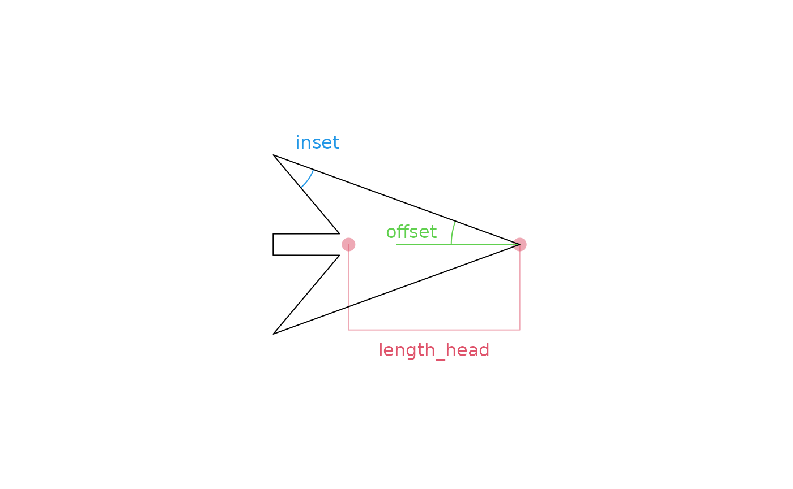
Below you can get an impression what kinds of shapes you can make with the wings arrowhead.
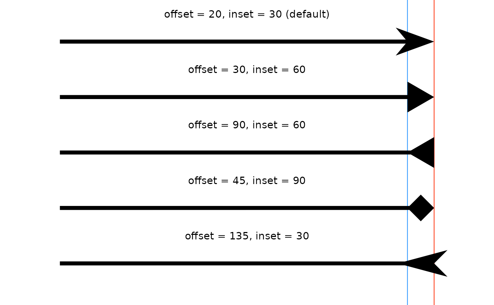
Line
The ‘line’ ornament draws two line segments departing from the line
end, and can be set using the arrow_head_line() function.
The linewidth aesthetic determines the thickness of the
departing line, in that the line width is the same between the path and
the ornament. The size of the arrow is once again determined by the
length_head argument, but now encompasses the length of the
protruding lines instead of the reconnection point back on the path.
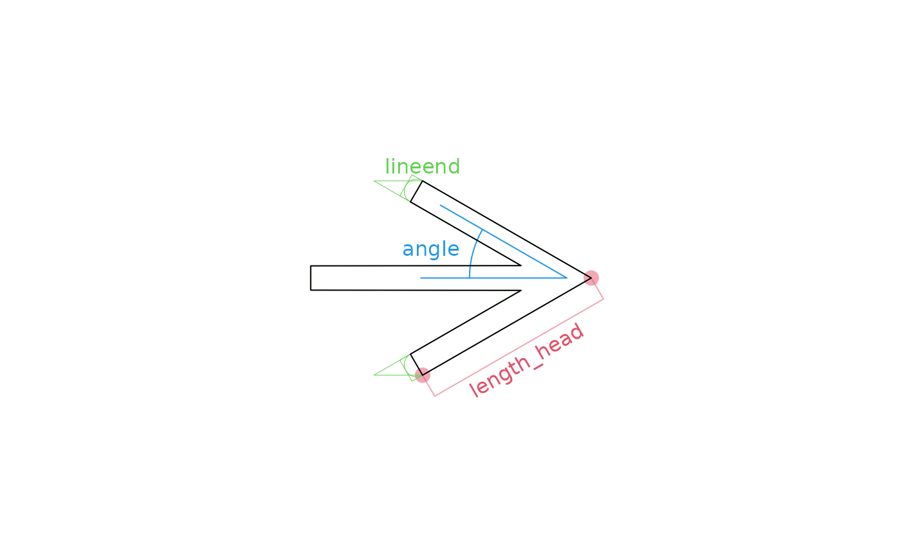
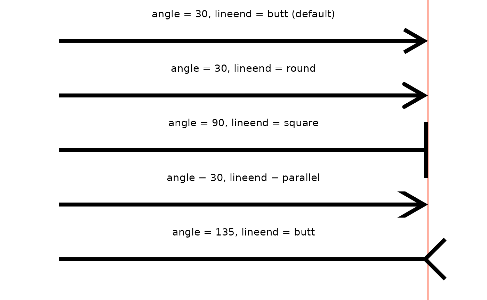
Fins ornaments
I haven’t bothered writing the vignette on these other ones yet.
Feather
The ‘feather’ ornament places two trapeziums on either side of the
line, and can be called using the arrow_fins_feather()
function. Contrary to many other ornaments, the feather ornament isn’t
defined by any angle. It is instead defined by the ‘height’ of the
trapezium and the distances along the path from the inner start and end
points to the outer ones called ‘indent’ and ‘outdent’. The
length_fins argument determines the total width of the
trapezium.
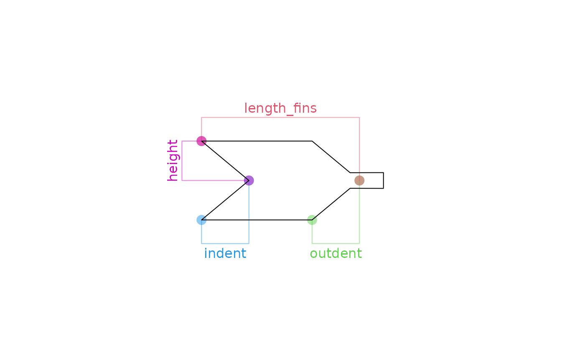
Below are some examples of what different settings look like with this ornament.
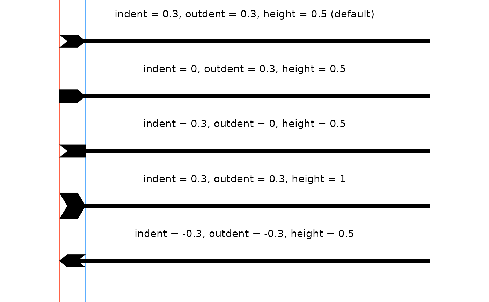
Line
The ‘line’ fins ornament mirrors the ‘line’ head ornament: it draws
two line segments departing from the line end and can be set using the
arrow_fins_line() function. Again the
linewidth aesthetic determines the thickness of the
departing line, in that the line width is the same between the path and
the ornament. This size of the arrow is determined by the
length_fins argument, but in contrast to
arrow_fins_line(), the length_fins argument
applies to the inner edge. Also in contrast, the angle is
measured from the extended path to the lines, rather than from the path
itself.
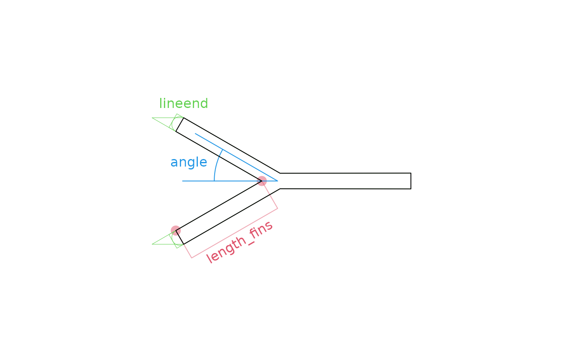
Another notable difference is that in arrow_fins_line()
the most extreme parts are at the path’s end and don’t protrude beyond.
For comparison, take a look at the 5th example in
arrow_head_line() and the first 4 examples below:

Minimal
The ‘minimal’ fin ornament again isn’t truly an ornament, but it
determines how the arrow shaft gets notched. Like
arrow_head_minimal(), arrow_fins_minimal()
doesn’t depend on any length_fins you might set and only
depends on the angle argument and the
linewidth aesthetic. The only difference between
arrow_head_minimal() and arrow_fins_minimal(),
is what part is considered the angle.
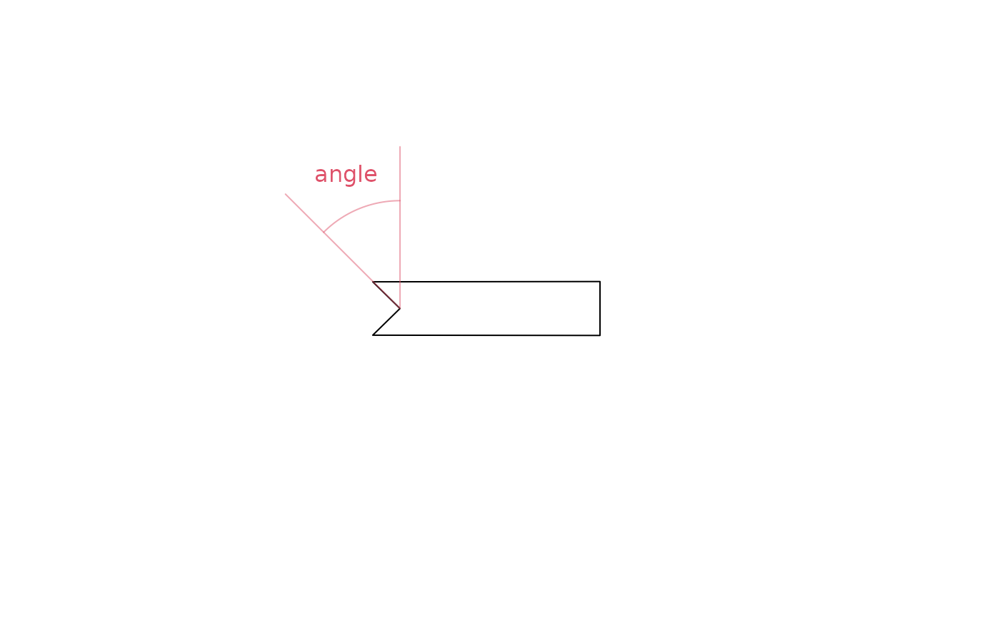
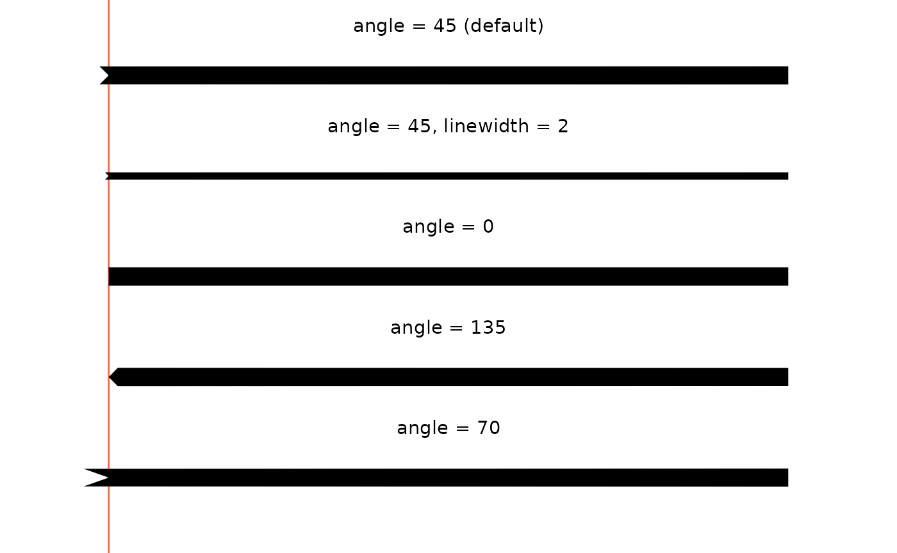
Other ornaments
Cups
Not more suitable for arrow head than for fins, the ‘cup’ ornament
may fit both ends of a path. The cup shape can be specified using the
arrow_cup() function and it follows a circular arc around
the endpoint of a path at some distance given by the resect
parameter. There are two ways these cups can be specified. The first one
is by the angle or the arc, which can be given by using the
arrow_cup(angle = ...) function. If the angle is left as
NULL, the ornament looks for the
length_{head/fins} and uses that as the arc-length to draw
the arc, which is the second specification.
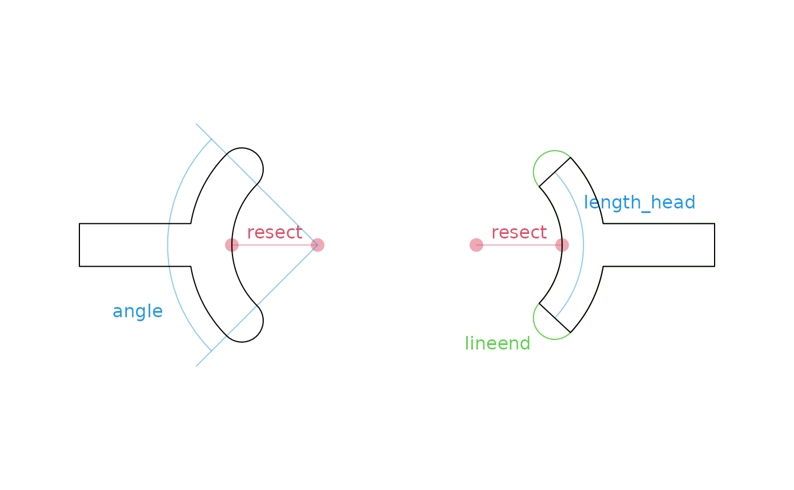
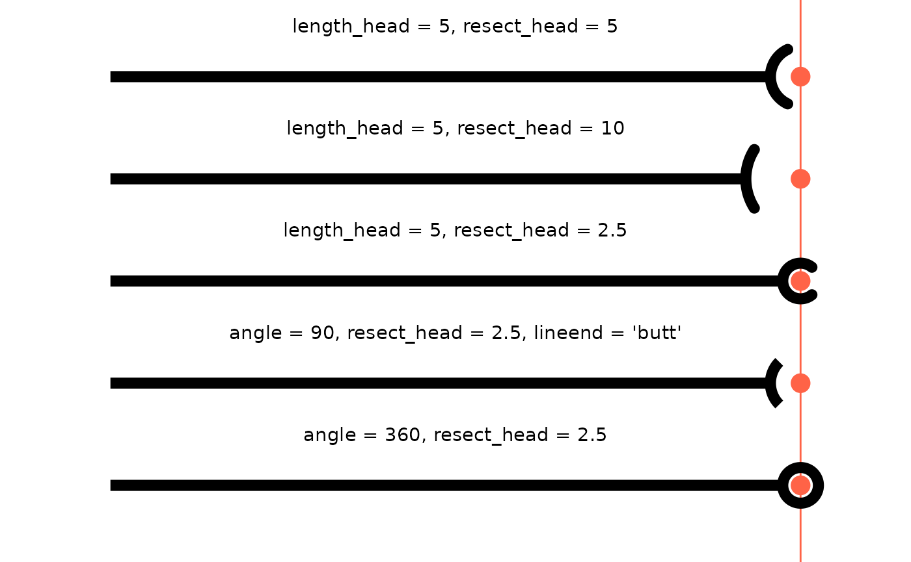
The cup shape can make it easier to single out some observations from the rest.
ggplot(mtcars, aes(disp, mpg)) +
geom_point(aes(colour = factor(cyl))) +
geom_arrow_curve(
data = ~ subset(.x, rownames(.x) == "Hornet 4 Drive"),
aes(xend = 300, yend = 25),
arrow_fins = arrow_cup(angle = 360), resect_fins = 1.5
) +
annotate(
"text", x = 300, y = 25,
label = "Hornet 4 Drive",
vjust = -1
)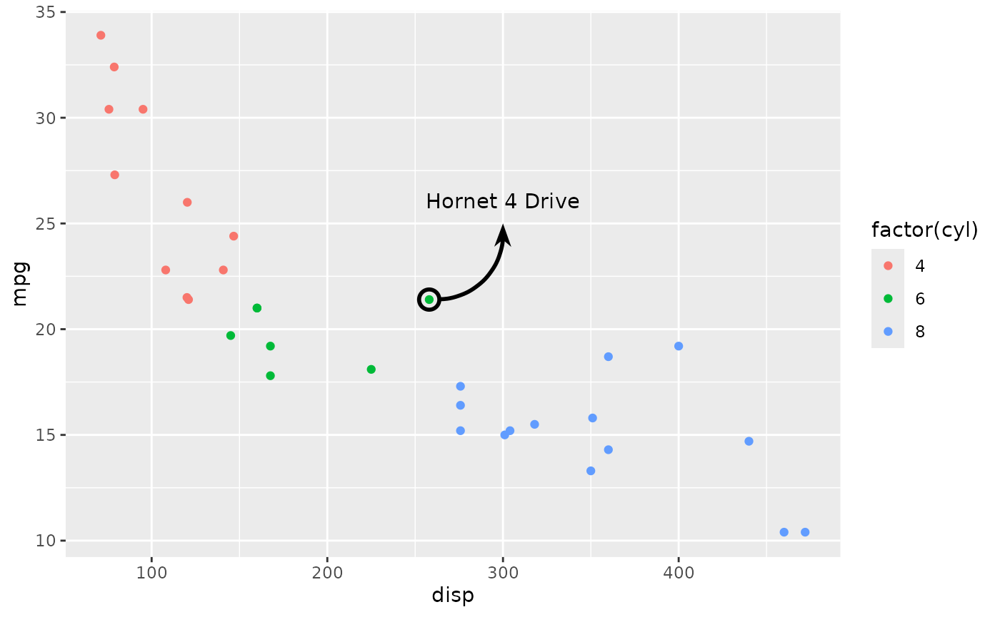